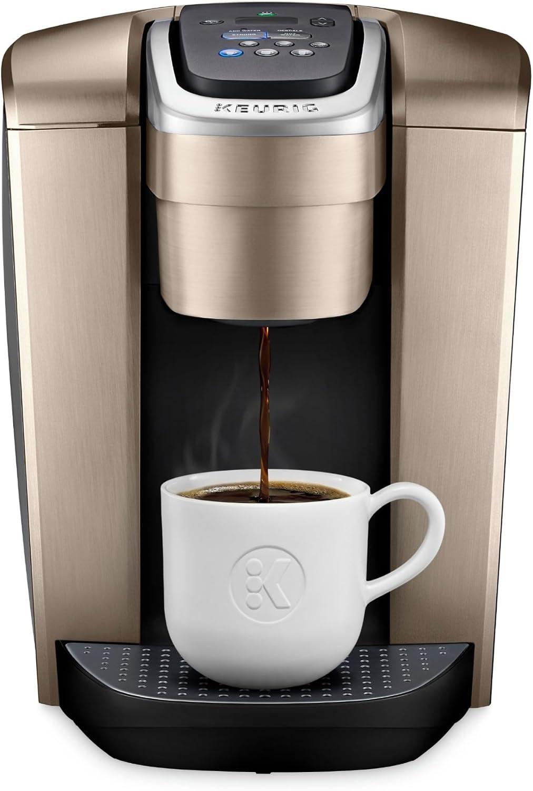
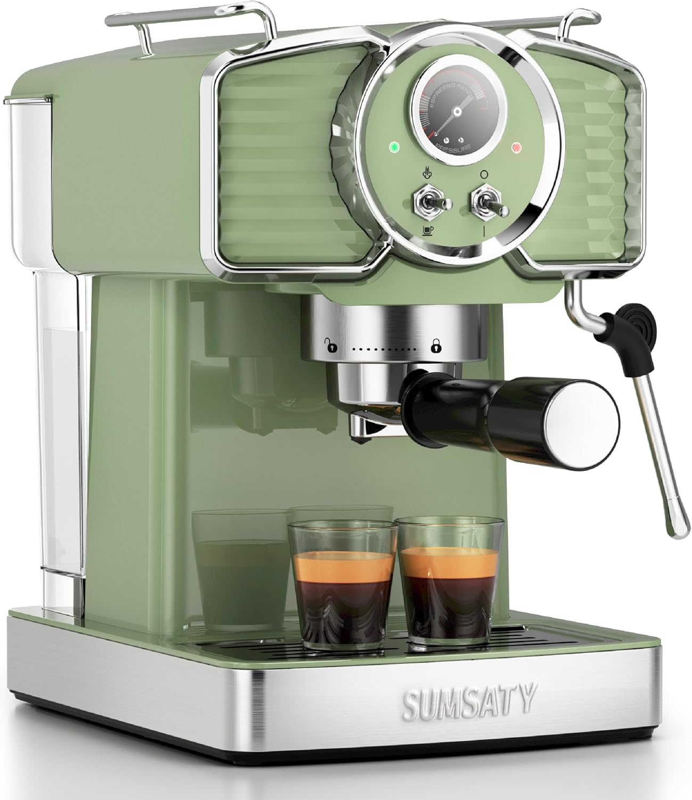
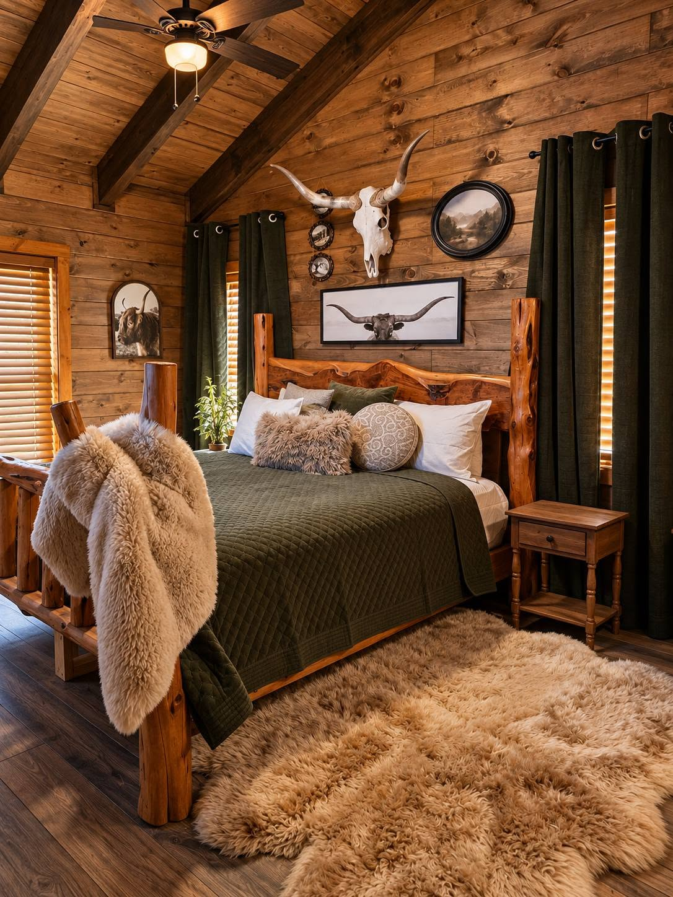
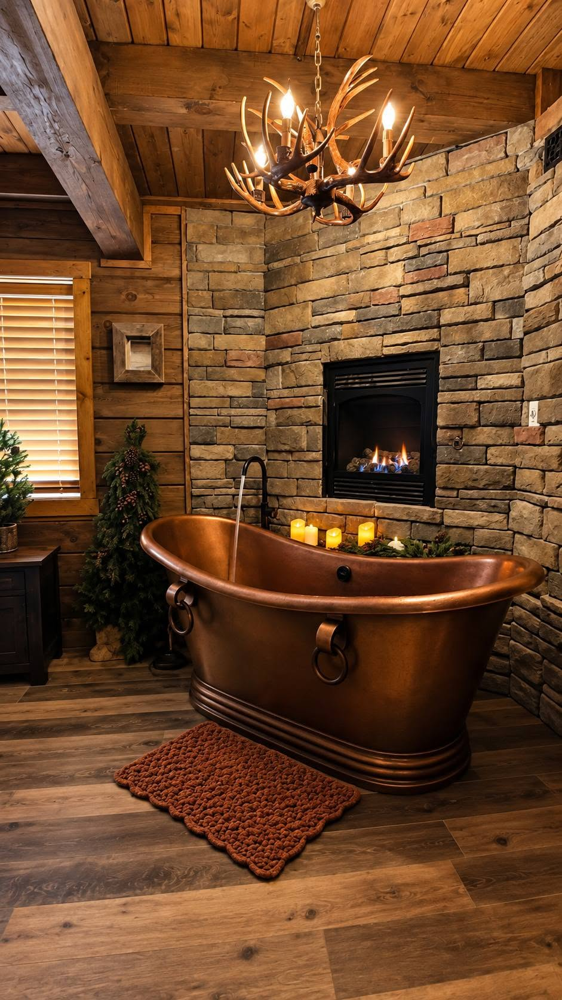
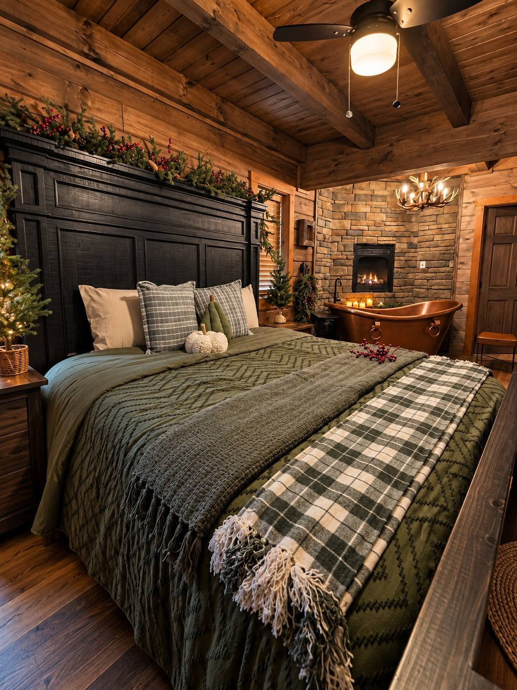
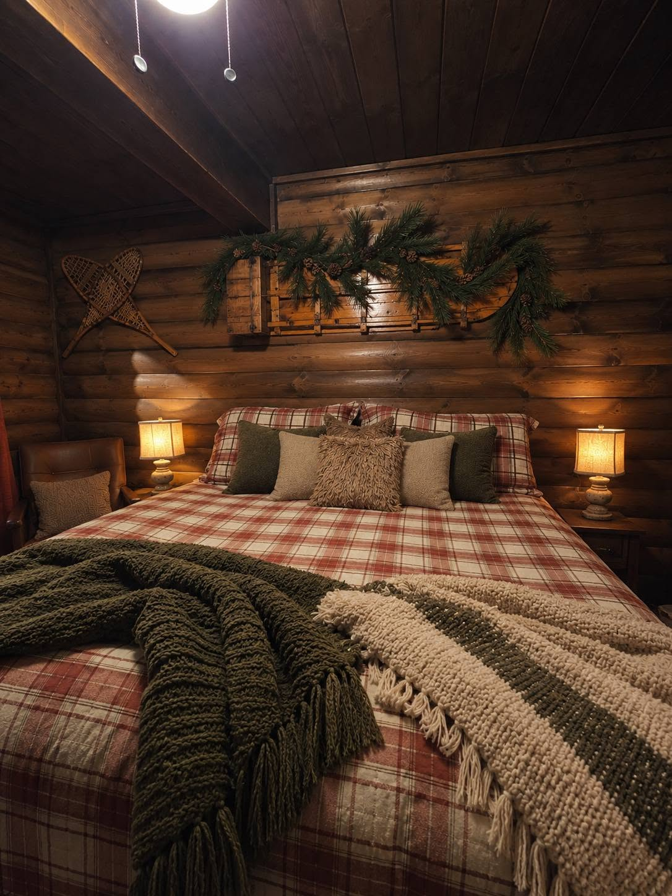
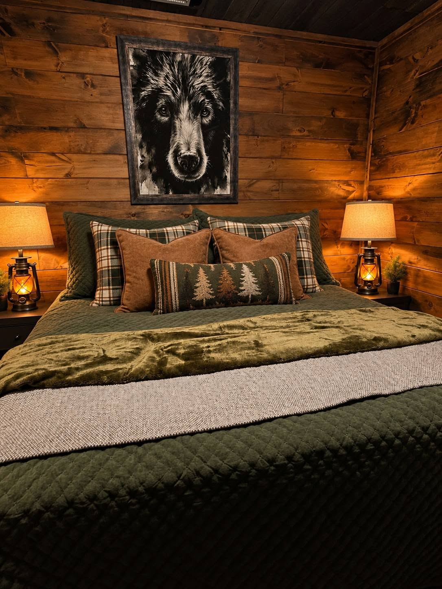
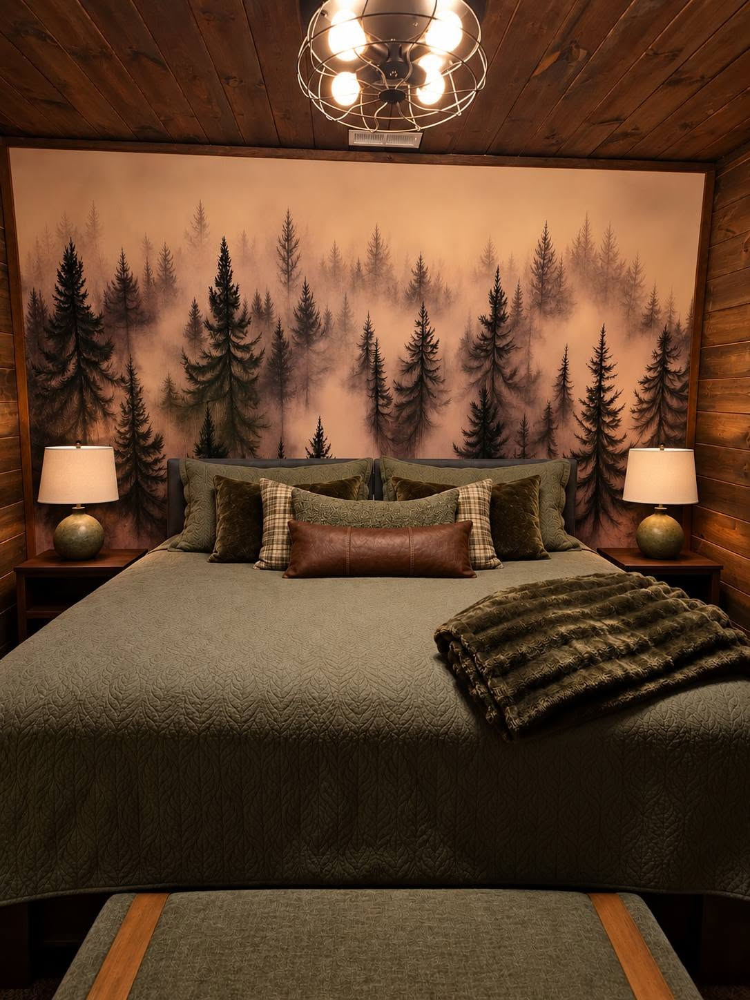

Your Home Away From Home
Get to Know the Lodge
Select a section below to discover everything Black Forest Lodge has to offer.
Living Room & Fireplace ⌄
🔥 Fireplace
Enjoy the warmth and ambiance of our beautiful riverstone fireplace any time of year! The fireplace is operational year-round.
Please note: A small pilot flame will remain visible inside the fireplace, even when the main fireplace is turned off. This is normal.
Turning the Fireplace On
Locate the timer dial on the right side of the fireplace. Gently turn the dial clockwise to your desired operating duration.
The fireplace will automatically turn off when the timer reaches zero.
Turning the Fireplace Off
To turn the fireplace off before the timer expires, use light pressure to turn the timer dial counterclockwise back to zero.
The main flame should extinguish. The small pilot flame will remain visible.
📺 Living Room Television
The living room TV is already connected to the lodge's Wi-Fi network. You're welcome to enjoy any available streaming and media apps during your stay!
Before checkout: Please remember to log out of any personal streaming accounts you've used. This helps keep your account information private and secure.
💡 Lighting
Living room light switches are located in two convenient areas:
- Near the lodge's front entrance.
- Near the stair landing, beside the side exit door leading to the porch.
Kitchen & Coffee Bar ⌄
From leisurely breakfasts to memorable dinners, the lodge's kitchen is equipped for cooking, gathering, and enjoying time together.
Major Kitchen Appliances
Everything for everyday cooking
- Gas oven and stovetop
- Full-size refrigerator
- Drawer-style microwave
- Full-size dishwasher
Additional Kitchen Equipment
A few extras for your favorite recipes
- Stand mixer
- Hand blender
- Toaster
Cookware & Dining Essentials
Ready for cooking, serving, and sharing
The kitchen includes plates, bowls, cups, silverware, and a selection of cooking utensils.
You'll also find several pots, pans, baking sheets, and additional kitchen tools for meal preparation.
BLACK FOREST COFFEE CO.
The Coffee Bar
A little café experience, right here in the mountains
Whether you prefer a classic cup of coffee, a rich espresso, or a relaxing cup of tea, you'll find plenty of ways to start your day.
Keurig Coffee Maker

Brew your favorite K-Cup beverages with convenient options for hot coffee, iced coffee, and stronger brews.
- Five cup sizes: 4, 6, 8, 10, and 12 oz.
- Strong brew setting
- Iced coffee setting (brews hot to enjoy over ice)
- Fast brewing
- Hot water on demand for tea, hot chocolate, or instant oats
Espresso Machine

Create your own café-style drinks with our espresso machine and built-in milk frother.
- Single or double espresso shots
- Adjustable milk-steaming function
- Hot water function
- Quick espresso extraction
French Press
Prefer a traditional brewing method? A French press is also available for a rich, full-bodied cup.
Coffee & Tea Supplies
- Starter supply of K-Cups
- Starter supply of ground espresso roast
- Assorted individual tea bags
- Sugar and sweetener packets
- Coffee mugs
- Spoons, stirrers, milk pitchers, and brewing accessories
Dining at the Lodge
Gather around the table
Enjoy a traditional dining setting for eight guests, with additional seating and dining options throughout the lodge.
Kitchen & Dining Lighting
Finding your way around
Kitchen light switches are located near the stove. Additional dining-area light switches can be found near the lodge's front entrance.
Bedrooms & Bathrooms ⌄
Settle into one of five distinctive king bedrooms, each designed with the warmth and character of Black Forest Lodge. Five bathrooms are conveniently located throughout the property.


BEDROOM ONE
The Longhorn Room
A statement true-log king bed and warm timber surroundings create a memorable mountain retreat.
- King true-log bed
- Smart TV
- Private genuine copper soaking tub
- Private gas-log fireplace
- Ensuite full bathroom
- Walk-in shower
- Whiskey barrel sink

BEDROOM TWO
The Pine and Berries Room
A welcoming king bedroom with its own copper soaking tub and gas-log fireplace for a relaxing stay.
- King bed
- Smart TV
- Private genuine copper soaking tub
- Private gas-log fireplace
- Ensuite full bathroom
- Walk-in shower
- Whiskey barrel sink

BEDROOM THREE
The Ski Room
Cozy mountain styling and a comfortable king bed make this a welcoming place to unwind.
- King bed
- Smart TV
- Ensuite full bathroom
- Walk-in shower
- Whiskey barrel sink

BEDROOM FOUR
The Bear Room
A cozy king bedroom with rustic accents and a welcoming mountain lodge atmosphere.
- King bed
- Smart TV
- Shared hallway bathroom between Bedrooms Four and Five

BEDROOM FIVE
The Forest Room
A peaceful king bedroom featuring an atmospheric evergreen forest mural and warm rustic finishes.
- King bed
- Smart TV
- Shared hallway bathroom between Bedrooms Four and Five
Bathroom Locations
Five bathrooms throughout the lodge
- Bathroom 1: Inside The Longhorn Room
- Bathroom 2: Inside The Pine and Berries Room
- Bathroom 3: Inside The Ski Room
- Bathroom 4: Lower-level hallway between The Bear Room and The Forest Room
- Bathroom 5: Loft level, near the pool table and air hockey table
Outdoor Living Spaces ⌄
From your first morning coffee to a relaxing evening under the stars, Black Forest Lodge offers three inviting outdoor living spaces, each with its own unique atmosphere.
MAIN FLOOR
The Good Morning Porch
Ease into the day on our wraparound main-floor porch, stretching from the front of the lodge to the back.
- Front porch rocking chairs and hanging egg chair seating
- Comfortable seating on the back porch, perfect for enjoying the morning air with a steaming cup of coffee
- Wraparound access from front to back
Lighting
Light switches are located on the wall beside the door, just before exiting onto the porch.
TOP FLOOR BALCONY
The Good Afternoon Porch
Settle into a beautifully decorated balcony retreat, with inviting seating and a relaxing atmosphere for spending a little time outdoors.
- Hanging egg chair seating
- Additional comfortable seating
- Thoughtfully decorated surroundings
Lighting
Light switches are located on the wall beside the door, just before exiting onto the balcony.
BOTTOM FLOOR
The Good Evening Porch
Unwind in our spacious lower-level outdoor retreat, designed for cozy evenings, comfortable gatherings, and a little well-deserved relaxation.
- Spacious eight-person hot tub
- Comfortable outdoor patio furniture
- Gas fire pit
- Mini coffee bar with a second Keurig coffee maker
Coffee on the Porch
Bring the portable coffee caddy from the kitchen down to the porch. With a second Keurig right here, you can keep everyone's mugs filled without climbing the stairs.
Lighting
Light switches are located on the hallway wall just before exiting onto the porch.
House Rules & Checkout ⌄
Welcome to Black Forest Lodge! We want your stay to be comfortable, memorable, and worry-free. Here's everything you need to know from arrival to departure.
YOUR ARRIVAL
Welcome to the Lodge
We're excited to host you! Check-in begins at 4:00 PM. Early check-in is not available.
Our cleaning team works diligently, often right up until check-in, preparing the lodge and attending to the little details that make your stay special. Please plan to arrive no earlier than 4:00 PM.
Arriving in Town Early?
Cracker Barrel is just about a mile away. Tell Brian we sent you, and he'll give you the best seat in the house! Ask for Justyn as your server, and don't forget to ask him to tell you a good joke.
Getting Settled
Once you arrive, take a look around and let us know if anything needs attention. Please report any apparent issues to your host right away so we can help before you get settled in.
A FEW HOUSE GUIDELINES
House Rules
- No smoking. Smoking is not permitted anywhere on the property.
- No pets. Pets of any kind are not permitted.
- No parties or events. Black Forest Lodge is not authorized to host parties or events.
- Neighborhood quiet hours: 10:00 PM to 8:00 AM. Please move gatherings indoors after 10:00 PM and be considerate of our neighbors.
MAKE YOURSELF AT HOME
During Your Stay
Furniture
Please leave furniture in its original location and avoid rearranging pieces during your stay.
Trash & Wildlife
Please secure all outdoor trash in the bear-proof bins located beneath the porch near the parking area.
Black Forest Lodge does have bear activity, along with the occasional curious raccoon! Never approach or feed wildlife, and please keep all trash secured.
Thermostat Guide
Controls the top-floor bedroom, game loft, and main living room below.
Controls the main-floor bedroom and the entire bottom floor.
We're Here to Help
Have a question, concern, or suggestion? Please reach out through your rental booking app. If there's an opportunity to make your stay even better, we'd love to hear about it while you're here!
UNTIL NEXT TIME
Checking Out
We hope you've had a wonderful stay at Black Forest Lodge!
Checkout is at 10:00 AM. Our cleaning team arrives promptly to prepare the property for our next guests.
Late checkout is available only when previously authorized in writing by your host. Please request any late checkout through your rental booking app and obtain approval before planning a later departure.
Before You Leave
A few small things help our cleaning team get a head start. Thank you!
This checklist is for your convenience. Your selections will reset when the page is reloaded.
A NOTE FROM OUR FAMILY
Until We Meet Again
Thank you for choosing Black Forest Lodge. We hope you've made memories here that you'll carry with you long after your mountain getaway.
Before you go, please sign our guest book. We'd love to know a little about your time here.
“There are no strangers here; only friends you haven't yet met.” — William Butler Yeats
With love from the Stotts family
We hope to welcome you back soon.